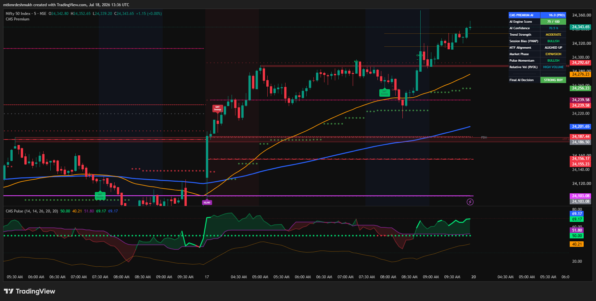
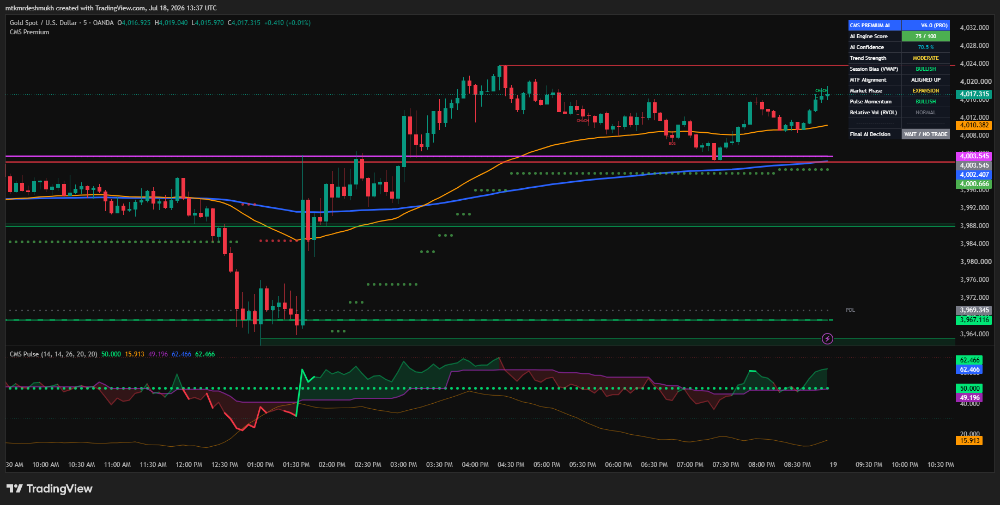
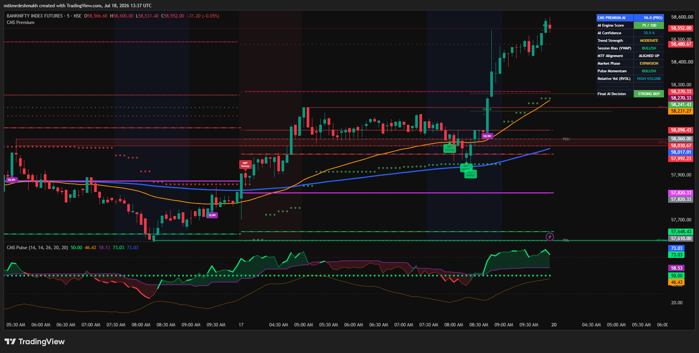

CMS Pro V6.0 हा एक इन्स्टिट्यूशनल लेव्हलचा अल्गोरिदम आहे, जो ट्रेडिंगव्ह्यू (TradingView) वर चालतो. हा इंडिकेटर प्रायव्हेट (Invite-only) असल्यामुळे, तो तुमच्या चार्टवर कसा ॲड करायचा याची स्टेप-बाय-स्टेप पद्धत खालीलप्रमाणे आहे:
Ctrl + /) या ऑप्शनवर क्लिक करा.
💡 टीप: इंडिकेटर लोड झाल्यावर चार्ट असा दिसेल.
CMS Pro V6.0 हा फक्त एक साधा इंडिकेटर नाही, तर इन्स्टिट्यूशनल ट्रेडर्ससाठी तयार केलेले एक पूर्ण AI-Powered Trading Terminal आहे.
STRONG BUY किंवा WAIT).
💡 उजवीकडील AI डॅशबोर्ड आणि खालचा CMS Pulse.

💡 SMT Sweeps आणि Order Blocks चार्टवरील पोझिशन्स.